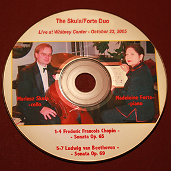

The Bel-Etre Duo
Live at Whitney Center - October 23, 2005
Mariusz Skula, cello - Madeleine Forte, piano
Listen to the entire CD on YouTube by clicking here
Excerpt: F. Chopin - Sonata Op 65. - I. Allegro moderato
Excerpt: F. Chopin - Sonata Op 65. - II. Scherzo
Excerpt: F. Chopin - Sonata Op 65. - III. Largo
Excerpt: F. Chopin - Sonata Op 65. - IV. Finale. Allegro
Excerpt: Beethoven - Sonata Op 69. - I. Allegro ma non Tanto
Excerpt: Beethoven - Sonata Op 69. - II. Scherzo. Allegro molto
Excerpt: Beethoven - Sonata Op 69. - III. Adagio Cantabile - Allegro Vivace